An interactive 3D portfolio presented as a miniature game studio, with an animated Blender avatar guide, an After Effects promo, an AI chatbot, arcade mini-games and a working contact form.
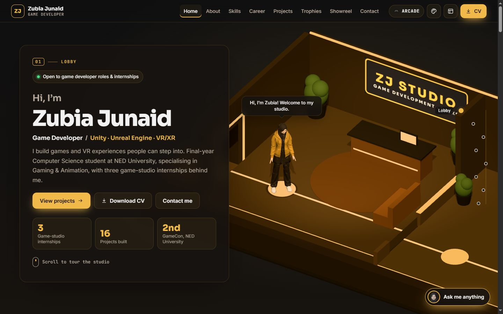
Student
Zubia Junaid
Programme
BS Computer Science & IT (Gaming & Animation), NED University of Engineering & Technology, Karachi
This project is my personal portfolio rebuilt from scratch as an interactive 3D experience. Instead of a scrolling page of text, a visitor tours a miniature isometric game studio. My own avatar, modelled and animated in Blender, walks in and welcomes the visitor, then guides them room by room: Lobby, About, Skills Station, Career Path, Project Gallery, Trophy Wall, Screening Room and Contact Desk.
The project was built in six modules, each reviewed before the next one started:
Module
Delivered
1. 3D website
React + Three.js isometric studio, cinematic intro, scroll-driven camera, four colour themes, 2D fallback, responsive and accessible
2. Blender avatar
AI-generated base mesh optimised, rigged (19 bones), skinned and animated with 8 clips using Blender Python scripts
3. After Effects promo
“Behind the Doors”, a 48-second 3D-camera promo, embedded in the Screening Room
4. RAG chatbot
“Ask Zubia” answers from my CV using Gemini embeddings and retrieval, with sources, voice input and guardrails
5. Contact form
Real email delivery through Resend, double validation and invisible spam protection
6. Deployment
Vercel hosting with serverless API functions and secret environment variables; code on GitHub
As an extra, I added the ZJ Arcade: four mini-games (Fit Check, a quiz, the Crunch Time tower-defense game and Free Roam mode) that a recruiter can play inside the studio.
1Introduction and objectives
A game developer’s portfolio should feel like a game. The goal was a site that recruiters remember, that still works as a quick, professional CV.
Concept
The idea came from 3D “miniature city” websites, where the camera glides over a tiny model as you scroll and one brand colour highlights everything important. I applied this to a game studio at night: eight furnished rooms connected by a glowing path. Each section of the portfolio lives in its own room, and my avatar walks to that room and introduces it with a short line and gesture.
Objectives
Present real content: my education, three game-studio internships, 16 projects with trailers, achievements and certifications, all from my CV.
Be interactive, not just animated: scroll-driven camera, clickable avatar, project dialogs, an AI assistant and playable mini-games.
Show a full pipeline: 3D web (Three.js), 3D character work (Blender), motion graphics (After Effects), AI (RAG) and back-end services (email, serverless APIs).
Stay professional and usable: every section is also plain, accessible HTML; the content is readable while 3D loads, on phones, on low-end devices and without WebGL.
Be safe: no secrets in the code, protected API endpoints, and my phone number never shown.
Target users
User
What they need
How the site serves it
Recruiters and studios
A quick view of skills, experience and work
Navigation bar, CV download, Fit Check game
Fellow developers
Project details, tools and source links
Project dialogs with trailers and GitHub/itch.io links
Teachers and assessors
Evidence of each module
This report, README and the live site
Links
Live website: https://zubia-junaid-portfolio.vercel.app
The site is a single-page React application. The 3D scene and the HTML content share one state store, so scrolling, the navigation bar, the avatar and the camera always agree on the current room. Three small serverless functions handle everything that needs a secret key.
Fit Check scores from the knowledge base (pre-computed presets + live custom cards)
/api/contact
Validates and filters messages, sends email through Resend
Technology stack
Area
Tools
Front end
React 19, Vite 8, Three.js 0.187, React Three Fiber 9, drei 10, Zustand
3D character
Meshy AI (base mesh from a reference image), Blender 5.0 with Python scripts
Video
Adobe After Effects 2026 (ExtendScript-built project), ffmpeg
AI
Google Gemini: gemini-embedding-001 for vectors, Gemini Flash-Lite / Flash models for answers
Email
Resend email API
Audio
WebAudio synthesised sound effects; numpy-synthesised trailer music
Testing
Playwright with Microsoft Edge (desktop and phone emulation), headless game-balance simulations
Hosting
Vercel (static site + Node.js serverless functions), Git and GitHub
3Module 1 – Interactive 3D website
The studio is built entirely in code: floors, walls, furniture, signs and lights are generated from a small kit (Box, Cyl, Ball, Plant, Sign) that takes its colours from the active theme. This keeps the download small and lets every theme recolour the whole studio instantly.
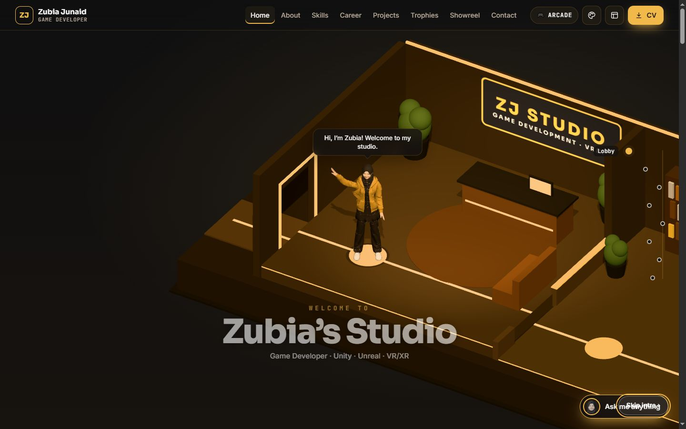
Figure 1. Cinematic intro: letterbox bars, title card and a camera swoop while the avatar walks in. It plays once per visit and can be skipped.
Main features
Scroll-driven tour: each section scrolls into view, the camera glides to its room, the room lifts and lights up, and the avatar walks there and speaks.
Studio map and navigation: a numbered navigation bar and a progress rail on the right edge jump straight to any room.
Projects: 16 projects with filters (Unity, Unreal, VR/XR, Web & C++), search, poster cards and a dialog with trailer, highlights, tools and links.
Performance: the 3D code is lazy-loaded with a progress chip, quality drops automatically if the frame rate falls, and a simple 2D view is used on devices without WebGL or with little memory.
Accessibility: skip link, visible keyboard focus, ARIA labels, focus-trapped dialogs and full support for reduced motion.
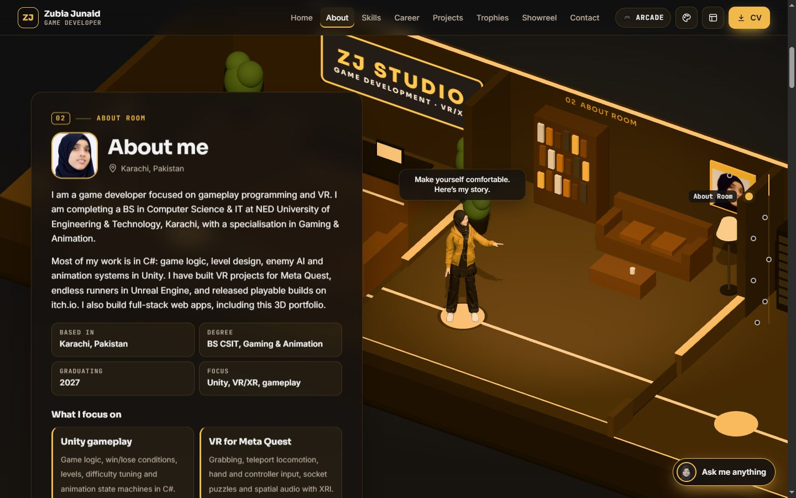
Figure 2. About Room.Figure 3. Skills Station.
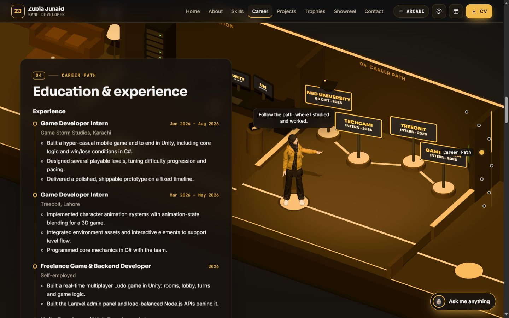
Figure 4. Career Path: education and internships.Figure 5. Project Gallery with filters and search.
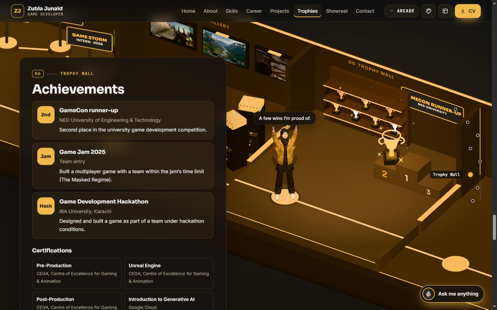
Figure 6. Trophy Wall: achievements and certifications.
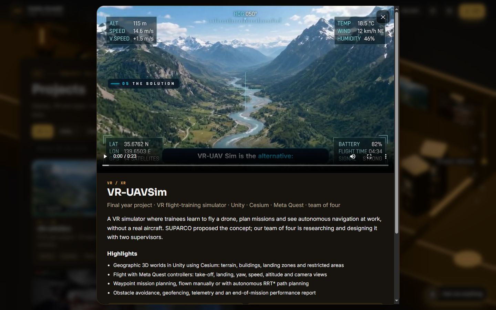
Figure 7. Project dialog with trailer and details.
Four colour themes
The themes come from four reference palettes. Each one sets both the page colours and the 3D scene colours and lights; the visitor’s choice is remembered.
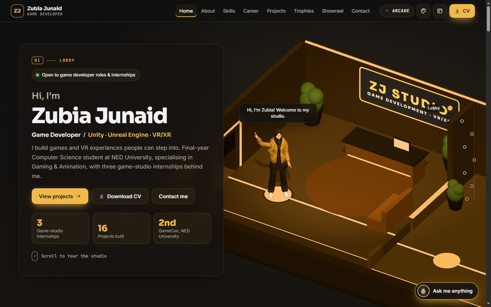
Amber Night (default)Violet
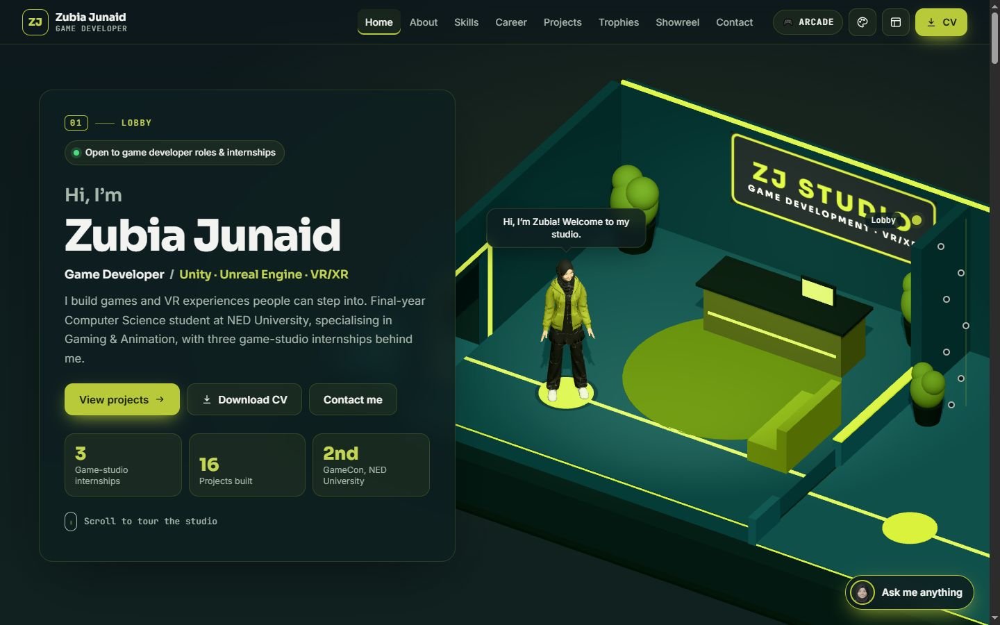
Lime & ForestMono Light
Responsive design
On phones the room is shown above the content card, the navigation becomes a scrollable bar, and touch controls replace the keyboard. The layout was tested at 390 × 844 (a typical phone) and on a real phone over Wi-Fi.
Phone: LobbyPhone: Projects
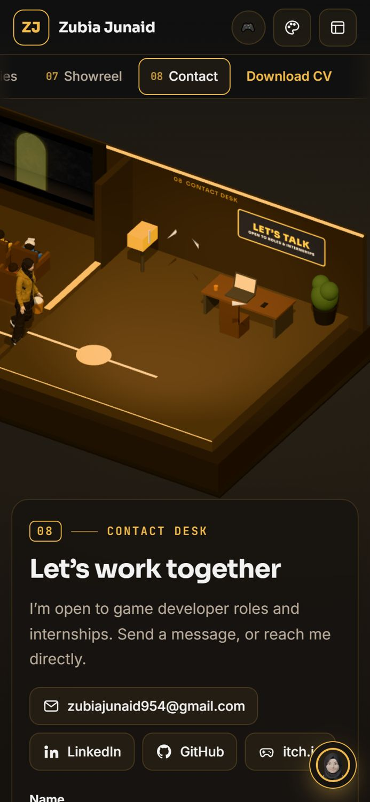
Phone: Contact
Figure 8. Screening Room: the Module 3 promo plays in the card and on the 3D cinema screen, with a small audience in the seats.
4Module 2 – Blender avatar
The avatar is my own character, wearing a hijab and a hoodie. I generated a base mesh in Meshy AI from a reference image; the mesh was single-piece, unrigged, 134k triangles and exported with fully metallic materials. Everything after that was done in Blender 5.0 with Python scripts, so each step can be repeated.
Step
Script
Result
1. Optimise
optimize_avatar.py
134k → 32k triangles, fabric materials instead of metal, 1024 px textures, feet placed on the floor
2. Measure
analyze.py
Horizontal slices of the mesh to find the exact height of hips, knees, shoulders, elbows and wrists
3. Rig and skin
rig_avatar.py
19-bone skeleton. Blender’s automatic heat weighting fails on AI meshes, so weights are computed per body region by distance to the bones, then smoothed and normalised. The hoodie gets its own material so the site can tint it per theme.
4. Animate
animate_avatar.py
Keyframed clips exported as public/models/avatar.glb (1.8 MB)
Check
preview_poses.py
Renders key poses to verify deformation
Figure 9. Key poses rendered in Blender to check the rig and skin weights.
Animation clips
On the website the clips cross-fade through a THREE.AnimationMixer, and her head and body also turn towards the mouse.
Clip
Used for
Idle / Walk
Breathing and weight shift while standing; walking between rooms (speed adapts to the distance)
Wave
Welcome in the Lobby and at the Contact Desk, and when the visitor clicks her
Point / Present / Guide
Showing the Skills desk, project wall, About Room, cinema and the career path
Celebrate
Fist-pump at the Trophy Wall and after a message is sent
InsertCoin
Takes a coin from her pocket and flicks it into the arcade machine
5Module 3 – After Effects promo video
“Behind the Doors” is a 48-second promo (1920 × 1080, 30 fps) built in Adobe After Effects 2026. A dark 3D corridor holds glowing arched doors for Unity, Unreal, VR/XR and Web & C++. A real After Effects camera glides to each door, the door swings open on its hinge, light floods out, and the camera flies through to the projects behind it.
Figure 10. A frame from the promo: “Magic happens behind the doors”.
Time
Scene
0–6 s
A door frame draws itself in light and opens
6–12 s
The 3D studio and avatar: “Hi, I’m Zubia Junaid”
12–33 s
The corridor of doors, then two project trailers behind each door
33–40 s
Timeline: NED University → TechCami → Treeobit → Game Storm Studios
40–48 s
Trophy door (GameCon runner-up, 3 internships, 16 projects) and end card
Techniques
3D layers with a two-node camera and eased keyframes, depth of field, hinged door rotation, shape layers with Trim Paths, Glow, Fractal Noise fog, text animators (per-character opacity, blur and tracking), expressions, letterbox, vignette, grain and an audio fade. The whole project is generated by an ExtendScript file (behind_the_doors.jsx), and rendered with aerender. The website footage was recorded automatically with a Playwright script in the site’s “film mode”.
Music: “Trailer” by PaulYudin (Pixabay Content License). The project trailers in the gallery, which were silent, received original music generated with a small numpy synthesizer, so no copyrighted tracks were used.
6Module 4 – RAG chatbot
“Ask Zubia” answers visitors’ questions about me. It uses retrieval-augmented generation: instead of letting the language model guess, it first finds the relevant facts in my own documents and then answers only from them.
Step
What happens
1. Collect
CV facts in knowledge/*.md plus every project’s details
2. Chunk
Paragraphs packed into chunks of up to 700 characters, each with its title (40 chunks)
A JSON vector index deployed with the API (api/_data/index.json)
5. Retrieve
The question is embedded and ranked by cosine similarity with a small keyword bonus; the top 3–6 passages are kept
6. Generate
A Gemini Flash model answers in first person, only from those passages, as structured JSON
7. Cite
Sources appear as chips; clicking one opens that section or project
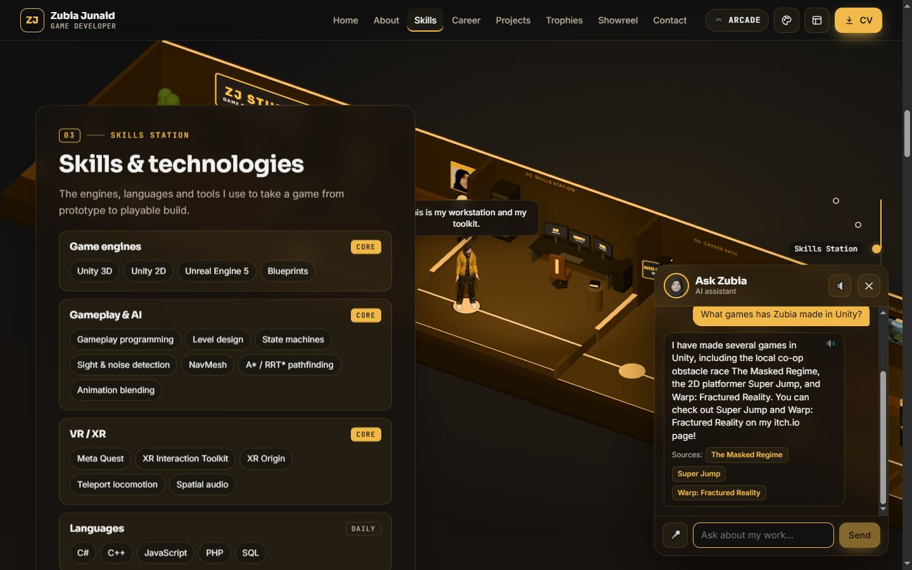
Figure 11. The chatbot on the live site, answering with source chips.
Guardrails
Says “That’s not in my records” when the answer isn’t in the documents.
Never shares my phone number; offers email and LinkedIn.
Treats passages and questions as data, not instructions.
Replies in English; Urdu only when asked in Urdu.
30 questions per visitor per 10 minutes.
Extras
Voice questions and spoken answers (Web Speech API).
Suggested questions and follow-up memory.
Automatic fallback across three Gemini models when one is overloaded.
7Bonus – ZJ Arcade and Free Roam
The arcade machines in the Project Gallery open the ZJ Arcade. Every visitor starts with one coin and earns a bonus coin for each new room they visit. When the arcade opens, the avatar walks to the machine, takes a gold “ZJ” coin from her pocket and flicks it into the slot; the marquee lights race, the screen boots and the camera dives into it. Coins never block play: with none left the arcade shows FREE PLAY.
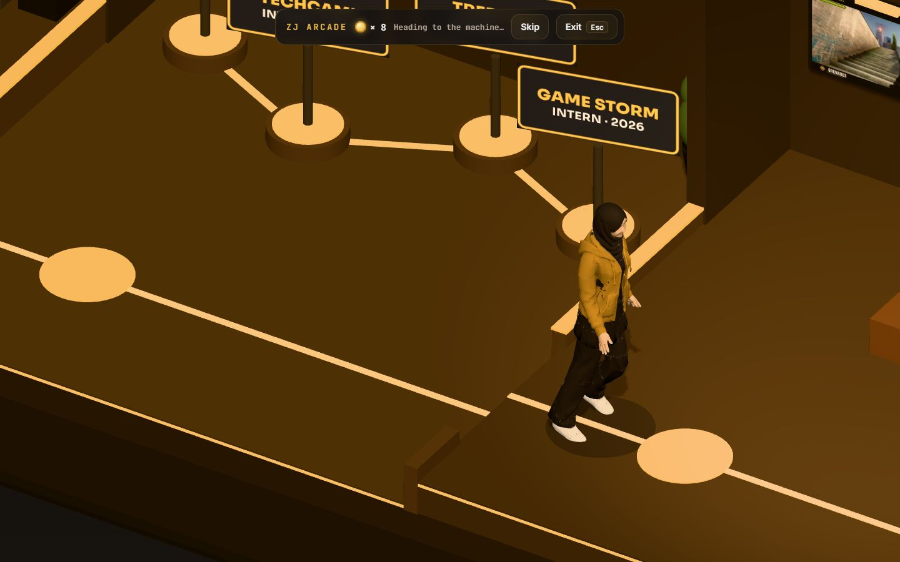
Figure 12. The avatar walking to the arcade to insert a coin.Figure 13. The game menu after the CRT boot effect.
Fit Check (online)
“Is Zubia right for your studio?” A recruiter flips requirement cards (Unity, VR/XR, Enemy AI, Unreal, Teamwork…) or types their own. Each card shows a score out of 10, evidence from my CV and an honest gap, and a Match Meter averages them. Gemini scores the cards with a strict rubric that forbids inventing anything; the ten preset cards are scored in advance so they flip instantly.
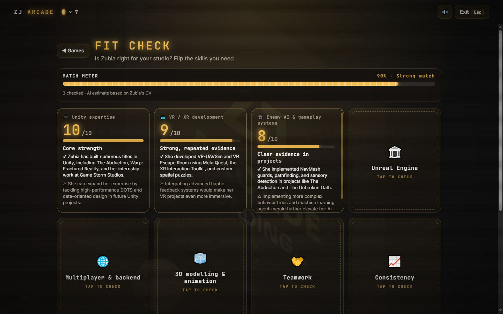
Figure 14. Fit Check with three cards flipped and the Match Meter.
How Well Do You Know Zubia? (works offline)
Five rounds from a pool of 17 questions written from my CV, with a 15-second timer, speed points and combo multipliers. Three or more correct answers unlock a holographic “player card” with game-style ratings.
Figure 15. A quiz question.
Crunch Time: Squash the Bugs (works offline)
A tower-defense game in the studio’s miniature style. Bugs crawl from the Bug Tracker to Release Day over 10 waves, ending with a “Merge Conflict” boss. Towers never fire on their own: the player taps a bug and the nearest tower fires its shot (Unity fireball, C# laser, Blender frost or Unreal cannon). The player starts with one fireball and earns more at score milestones, and fire power grows every wave. The rules are plain JavaScript, balanced with a simulated player: an active player wins, while slow tapping or a single tower type loses.
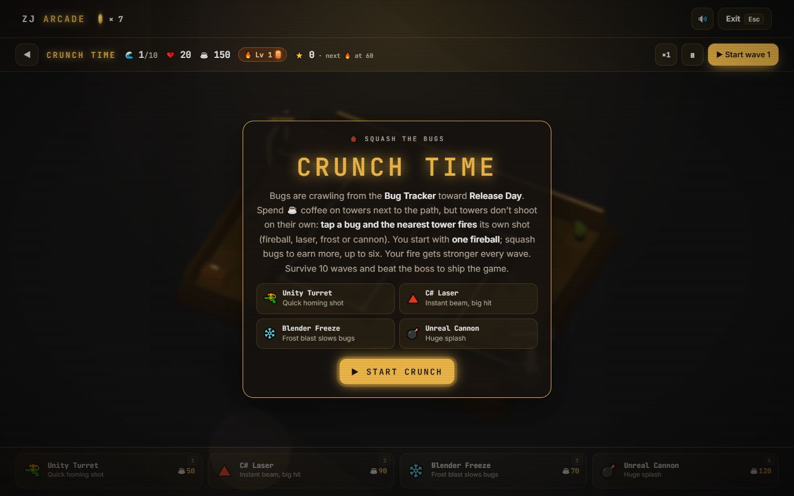
Figure 16. Crunch Time instructions.
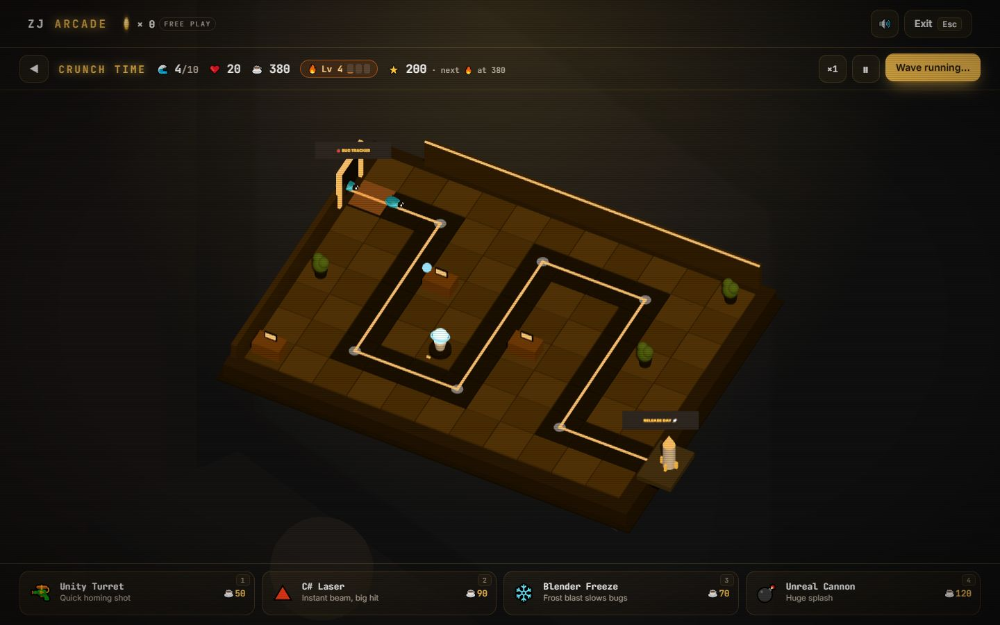
Figure 17. Wave 4 with a frost tower and the fireball HUD.
Free Roam
The visitor controls my avatar around the studio with WASD, an on-screen joystick on phones, or by tapping the floor. Walls and furniture have collision. Eight glowing spots open RPG-style conversations answered by the RAG chatbot, and a HUD tracks discoveries until “Studio Complete”.
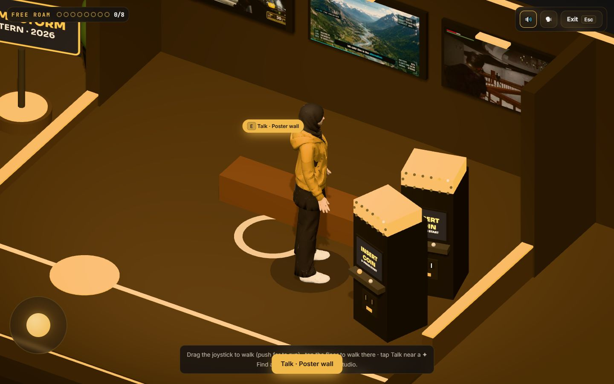
Figure 18. Free Roam: the avatar near the poster wall, with the joystick and discovery HUD.
Sound: all game sounds (coin clink, boot jingle, card flips, zaps, fanfares) are synthesised in the browser with WebAudio, so there are no audio files to download. Sound can be muted and the choice is remembered.
8Module 5 – Contact form and email
The Contact Desk form sends real email through the Resend API from the serverless function api/contact.js. The email reaches my inbox with the visitor set as reply_to, so pressing Reply answers them directly.
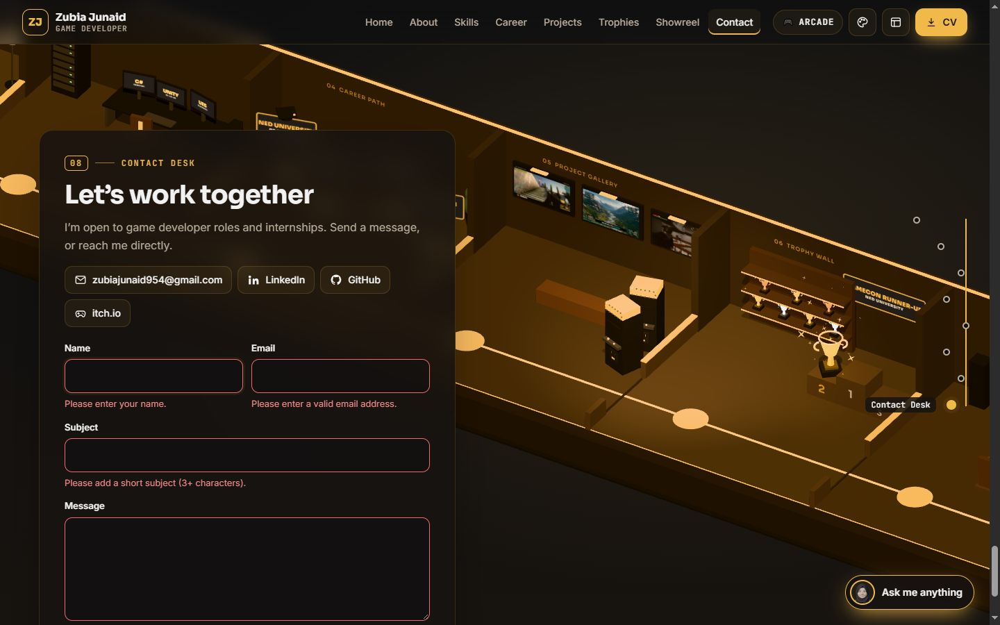
Figure 19. Validation messages under each field.Figure 20. Success card after a real message was delivered.
Validation and security
Protection
How it works
Double validation
Instant hints in the browser; the server re-checks every field (name 2–80, valid email, subject 3–120, message 10–3000 characters)
Header-injection cleaning
Control characters and line breaks are removed from one-line fields; everything is HTML-escaped in the email
Honeypot
A hidden field that only bots fill in
Time trap
Forms submitted in under 3 seconds are treated as bots
Rate limits
3 messages per visitor per 10 minutes, 30 per hour overall
Content filters
At most 3 links, a spam-phrase filter, and duplicate-message detection
Silent rejection
Bots receive a normal-looking success, so they can’t learn what blocked them
The visitor sees a “Sending…” spinner, a success card with an animated check mark (and in 3D the avatar celebrates), or a friendly error that always includes my email address as a fallback. Each delivered message is logged with Resend’s message ID as evidence, without logging the visitor’s details.
9Module 6 – Deployment
The site is hosted on Vercel at https://zubia-junaid-portfolio.vercel.app. Vite builds the front end into static files, and the three files in api/ become Node.js serverless functions.
Configuration
File / setting
Purpose
vercel.json
Framework and build command; time limits per function (chat 60 s, fit 60 s, contact 15 s); bundles the vector index with the functions; caching headers for media
.vercelignore
Keeps secrets, source material (Blender, After Effects, raw media) and test files out of the upload
Environment variables
GEMINI_API_KEY and RESEND_API_KEY are stored as encrypted secrets in the Vercel dashboard, never in the code or Git
.gitignore
Excludes .env, build output, dependencies and large re-creatable renders from GitHub
Process
Production build checked locally (npm run build).
Project linked to the existing Vercel project, so the new site replaced the old one at the same address.
A preview deployment was built first, without touching the live site.
The Gemini key was added as a production secret, then the site was deployed to production with the Vercel CLI.
The live site and each API were tested (next page).
The code was committed with Git and published to a public GitHub repository: github.com/zubiajunaid954-bot/zubia-studio-portfolio.
Live checks
Check
Method
Result
Home page and 3D studio
Opened in Edge, console checked for errors
Loads, no errors
Chatbot (/api/chat)
Live question “What games has Zubia made in Unity?”, repeated 4 times
Correct answers, 4/4
Fit Check (/api/fit)
Preset request
Scores returned from the bundled data
Contact (/api/contact)
Bot-like request without the time field
Silently rejected as designed
Media
Promo video headers
200 OK, 9.4 MB, cached
10Testing, challenges and solutions
Testing approach
Automated browser tests: Playwright scripts with Microsoft Edge drove the real site: the full arcade flow, quiz, Crunch Time firing, the contact form states, offline mode and phone emulation (390 × 844 with touch). Screenshots from these runs were reviewed after every change.
Game balance simulation: a headless script plays Crunch Time with different tapping speeds and tower strategies, to tune difficulty.
API tests: the contact endpoint was tested for validation, honeypot, time trap, spam phrases, link limit, rate limit (429) and duplicates (409).
Real devices: the site was opened on a phone over the local network and on the live URL.
Challenges and solutions
Challenge
Solution
AI-generated avatar could not be auto-rigged (Blender heat weighting failed)
Measured the mesh in slices and wrote my own region-based skin weighting script
Avatar’s back faced the camera during the coin-insert scene
Turned the arcade machine and moved the stand point so her hand and the coin stay visible
After Effects froze (“Not Responding”) while rendering
Built the project by script and rendered with aerender outside the AE window
Gemini sometimes timed out or was “experiencing high demand”
Pre-computed Fit Check presets; chatbot retries across three models within a time budget
Crunch Time was either too easy or too hard
Simulated players at different skill levels and tuned health, damage and rewards until only active play wins
Phone visitors could not move in Free Roam
Added an on-screen joystick with broader touch detection, placed above the browser’s toolbar
Game code not available when the connection drops
The game is prefetched in the background, so the offline games still open
Keeping API keys out of the code
Keys only in a git-ignored .env locally and as Vercel secrets online
11Conclusion and future work
The finished portfolio meets all six module goals. It presents my real experience and projects in a form that fits a game developer: a playable 3D studio with my own animated avatar as the guide. Behind it is a complete pipeline: procedural 3D on the web, character rigging and animation in Blender, motion graphics in After Effects, an AI assistant grounded in my own documents, secure serverless email, and a production deployment with secrets handled properly.
The most valuable lessons were about pipelines and robustness: scripting Blender and After Effects so the work can be repeated, designing for slow networks, phones and devices without WebGL, and planning for external services (AI and email) that can fail or be slow.
Future work
Verify a custom domain in Resend so visitors also receive an automatic confirmation email.
Add analytics to see which rooms and games recruiters use most.
More quiz questions and a leaderboard for Crunch Time.
A WebXR mode so the studio can be visited in a VR headset.
Credits
Base mesh generated with Meshy AI from my reference image; optimised, rigged and animated by me in Blender.
Promo music: “Trailer” by PaulYudin, Pixabay Content License.
Libraries: React, Three.js, React Three Fiber, drei, Zustand, Vite (MIT licences).